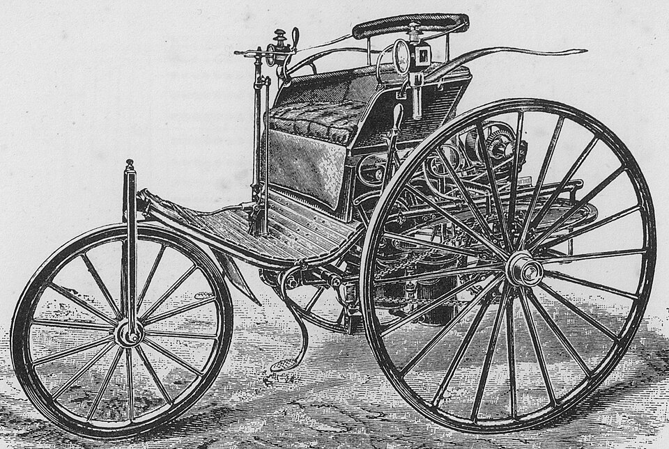
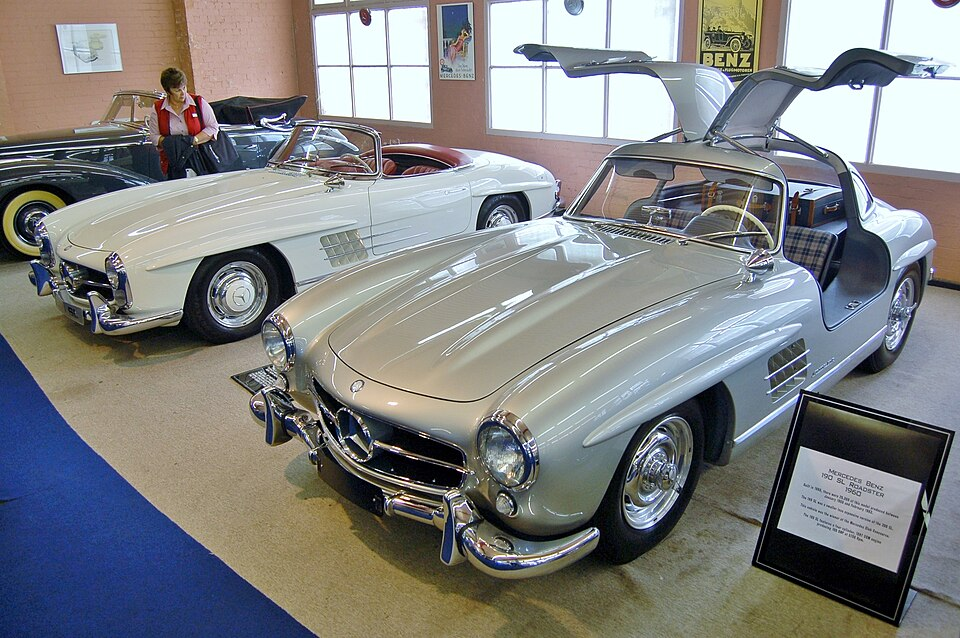
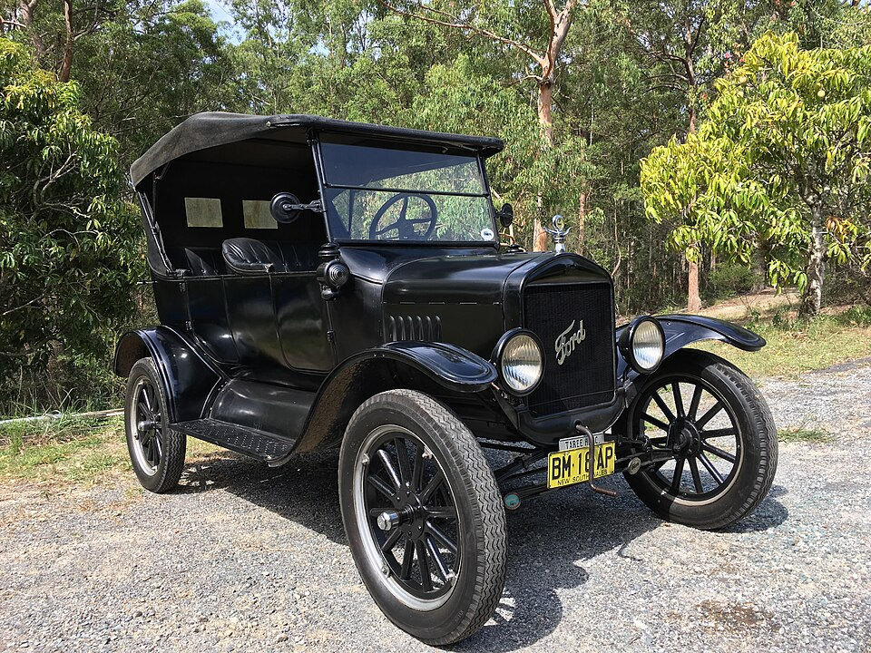
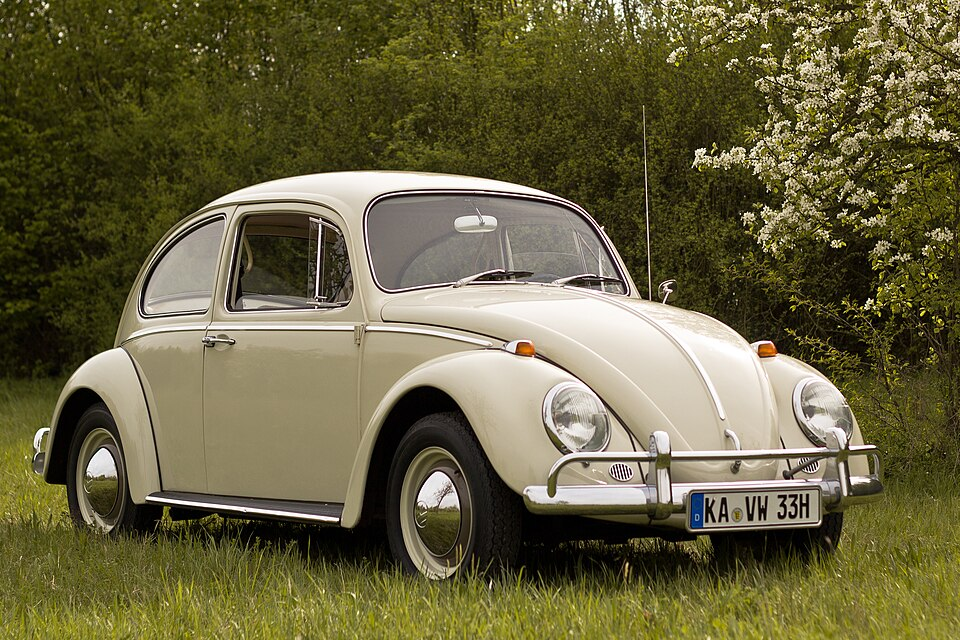
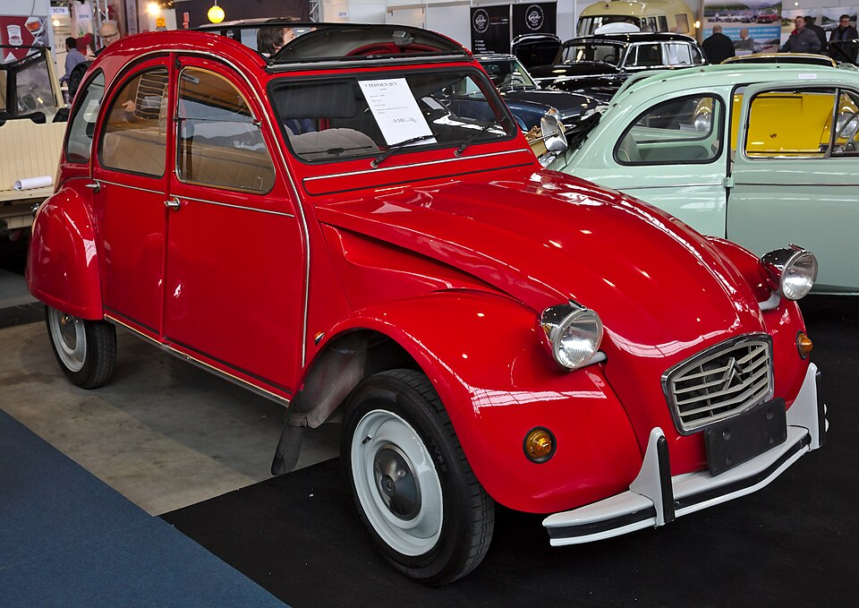
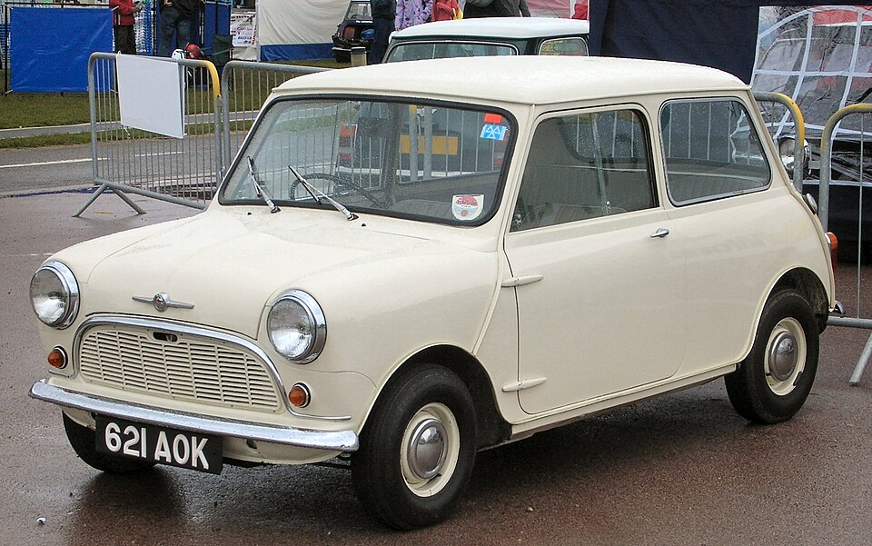
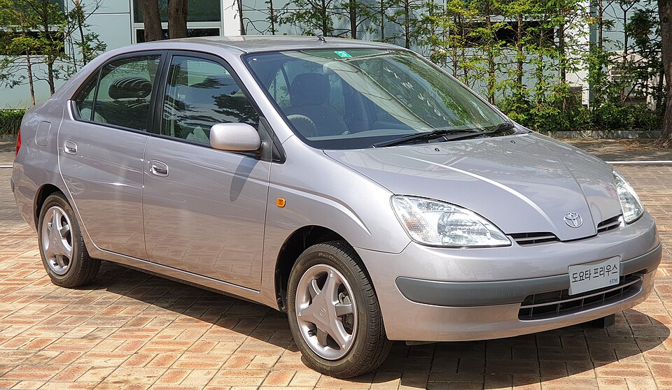
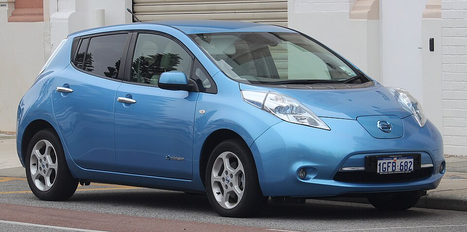

Benz Patent-Motorwagen
Kārļa Benca patentētais trīsriteņu automobilis ar benzīna dzinēju.
1886–2010
Ceļā no Kārļa Benca trīsriteņa līdz sērijveidā ražotam elektroauto.
Apskatīt galeriju
Astoņi modeļi parāda, kā vairāk nekā gadsimta laikā mainījās automobiļu uzbūve un ražošana. Ford montāžas līnija ļāva ražot auto lielos apjomos, Mini taupīja vietu pilsētā, bet Prius un Leaf parādīja divus dažādus veidus, kā elektromotoru izmantot ikdienas braucienos.
Modeļi sakārtoti pēc to ieviešanas vai pirmās prezentācijas gada.

Kārļa Benca patentētais trīsriteņu automobilis ar benzīna dzinēju.

Masveida ražošana padarīja automobili pieejamu plašākam pircēju lokam.

Noapaļotās formas dēļ šo automobili Latvijā dēvē par vabolīti.

Vienkāršs un viegls automobilis, ko izstrādāja ikdienas braucieniem Francijas laukos.
Sporta automobilis ar uz augšu veramām durvīm.

Šķērsām novietotais dzinējs atbrīvoja vairāk vietas pasažieriem.

Hibrīdautomobilis, kas apvieno benzīna dzinēju un elektromotoru.

Elektroautomobilis, kura dzinēju darbina uzlādējams akumulators.


.JPG){kind=link}
.jpg){kind=link}
.jpg){kind=link}
_hatchback_(2018-11-02)_01.jpg){kind=link}